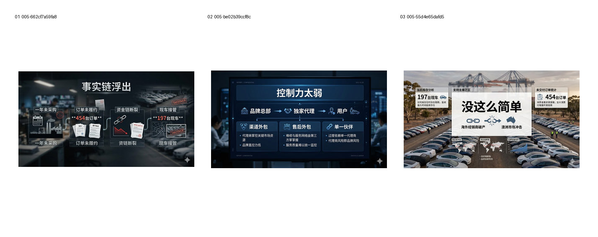
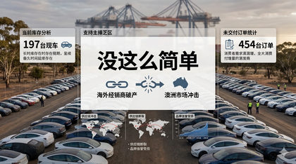

B1 · 首轮 Beta / Prompt 1.x：Auto-Overannotation
观察模型在指定文字之外自动增加解释卡、地图、图表和重复文字的问题。
Evidence: references/text2pic/conversations/005-视频制作流程建议/IMAGE_MANIFEST.md § B1｜首轮 Beta / Prompt 1.x：Auto-Overannotation

Images
13df08375823a7ce…
d97c341706aed692…

f93bec82f4b2b9cf…